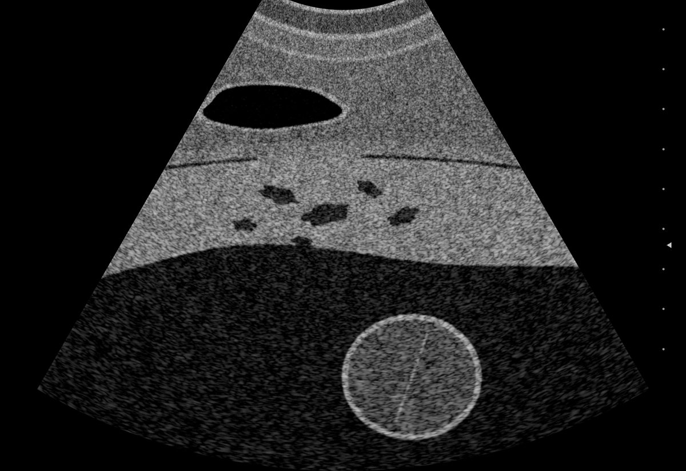

Help build the next AURORA.
AURORA reads routine 2D transabdominal ultrasound for signs of placenta accreta spectrum. We are looking for clinicians and scientists who want to use it, and for centers that want to help train AURORA 2.0.

Use it on your scans, or help it learn from them.
Research access
A research viewer is being prepared that runs AURORA in your own browser, so scans never leave your device. Registered researchers will be invited first.
Train AURORA 2.0
We are forming a consortium of centers with pathology-confirmed PAS cases. Images are de-identified at your site and shared only under signed institutional agreements.
Tell us about your center.
The form asks for your name, email, institution, role and country; whether you want to use AURORA, contribute images, or join a multicenter study; your ultrasound machines and reading software; and roughly how many PAS cases you see each year.
 Scan to open this page on your phone.
Scan to open this page on your phone.